AI & Graphs
Graphs to aid AI
What is a graph?
- A graph is a set of vertices/nodes connected by edges/arcs
- In AI, graphs are used to model relationships, networks, and decision-making problems
- They can represent things like:
- Routes between cities (pathfinding)
- Connections in a neural network
- State transitions in decision trees or planning
Types of graphs
| Type | Use in AI |
|---|---|
| Directed Graph | Models one-way relationships, such as state transitions in search algorithms (e.g. A*) |
| Undirected Graph | Useful for bidirectional relationships, such as undirected social connections in a graph |
| Weighted Graph | Represents costs or heuristics, commonly used in shortest path algorithms like Dijkstra’s or A* |
Representation of graphs
- Graphs can be represented using:
- Adjacency Matrix – ideal for dense graphs and fast lookup
- Adjacency List – more space, efficient for sparse graphs (often used in AI search)
- Both can be used in AI to represent problem spaces such as:
- Game boards
- Map-based navigation
- Resource allocation networks
Undirected, unweighted graph
-
An undirected, unweighted graph is a type of graph where:
- Edges have no direction, connections go both ways
- All edges are equal, there are no weights or costs
- It is represented with a symmetric adjacency matrix, where a
1indicates a connection and a0means no connection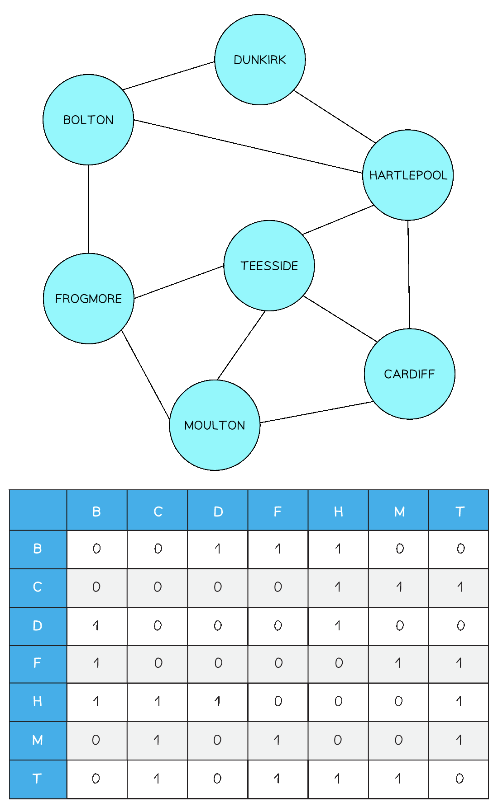
-
In this example:
- Each node is a town (e.g. Bolton, Dunkirk, Teesside)
- A
1in the matrix shows a connection exists between two towns - A
0means no direct connection
- A
- Each node is a town (e.g. Bolton, Dunkirk, Teesside)
- Example:
- Bolton and Frogmore have a
1at their intersection → they are connected - Dunkirk and Moulton have a
0→ no direct connection
- Bolton and Frogmore have a
- The matrix is symmetric, confirming that the graph is undirected
AI relevance
- Undirected, unweighted graphs are useful in AI for:
- Exploring environments, e.g. mapping rooms in a building with equal-cost connections
- Clustering in machine learning, where the presence of a connection implies similarity
- Social network analysis, where mutual connections (friendships, links) are undirected
- These graphs are often used in:
- Depth-first or breadth-first search
- Graph traversal algorithms to explore all reachable nodes
Directed, unweighted graph
- A directed graph (or digraph) is one where edges have a direction
- This means connections go from one node to another
-
Connections cannot be traversed in reverse unless another directed edge exists
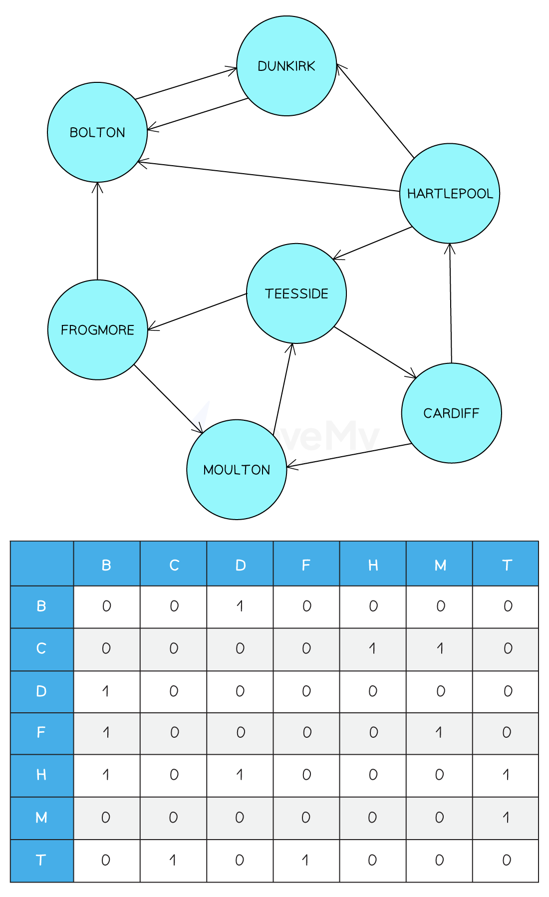
-
In this example:
- Each node represents a town
- Arrows show the direction of travel
- A
1in the matrix at (row X, column Y) means there is a directed edge from X to Y - A
0means there is no direct connection
- For instance:
B → Dis allowed (matrix value = 1)D → Cis not allowed (matrix value = 0)
- Because this matrix is not symmetric, it reflects the one-way nature of connections
AI relevance
- Directed, unweighted graphs are essential in AI for:
| Use case | How the graph is used |
|---|---|
| Search algorithms | Used in A, BFS, DFS* where state transitions are directional |
| Expert systems / rule engines | Representing dependencies between logical conditions or actions |
| Planning and scheduling | Modelling prerequisites and directed workflows |
| Navigation | Handling one-way streets or directed transport systems |
Undirected, weighted graph
- An undirected, weighted graph is a graph where:
- Edges go both ways (no direction)
- Each edge has a weight, which can represent:
- Cost
- Distance
- Time
- Risk
-
If no connection exists between two nodes, the matrix contains ∞ (infinity)
-
Nodes represent towns
- Edges represent roads, and weights represent distances or costs
- In the matrix:
matrix[B][D] = 15→ Bolton to Dunkirk is 15 unitsmatrix[B][C] = ∞→ Bolton and Cardiff are not directly connected
- The matrix is symmetric, confirming this is an undirected graph
AI relevance
- Undirected, weighted graphs are widely used in AI when:
| Use case | How It helps AI |
|---|---|
| Pathfinding (e.g. A*, Dijkstra) | Finding the lowest cost path between nodes |
| Clustering & similarity graphs | Edges represent strength of relationships or similarity weights |
| Recommendation engines | Connecting users or items based on weighted similarity |
| Robotics & navigation | Planning efficient movement paths through environments |
- In AI, the weights are crucial for deciding the best route or option when multiple paths are available
Directed, weighted graph
- A directed, weighted graph is a graph where:
- Edges have a direction (e.g.
A → Bbut notB → A) - Each edge has a weight, such as:
- Distance
- Cost
- Time
- Probability
- Edges have a direction (e.g.
-
If there is no edge, the value is ∞ (infinity)

-
Nodes = Towns
- Edges = One-way roads
- Weights = Travel cost or distance
- The adjacency matrix:
B → D = 15→ there is a road from Bolton to Dunkirk costing 15 unitsC → H = 17→ Cardiff to Hartlepool has a weight of 17H → T = 31butT → H = ∞→ you can get from Hartlepool to Teesside, but not the other way
- This matrix is not symmetric, confirming the graph is directed
AI relevance
- Directed, weighted graphs are critical in AI for:
| Use case | Purpose in AI |
|---|---|
| A and Dijkstra algorithms * | Choosing the shortest path where direction and cost matter |
| Route planning in robotics | Modelling direction-sensitive travel (e.g. traffic rules) |
| Search algorithms | Tracking cost between transitions between states |
| Reinforcement learning | Modelling rewards/costs for state transitions in decision environments |
| Game AI | Movement systems with terrain costs or restrictions |
Dijkstra’s Shortest Path Algorithm
Dijkstra’s shortest path algorithm
- In Computer Science, an optimisation problem involves finding the most efficient solution to a given problem
- This could mean minimising cost, time, or resource usage, or maximising output, efficiency, or value
- Examples of optimisation problems include:
- Finding the shortest route between two locations (e.g. Google Maps)
- Minimising resource usage in manufacturing or video games
- Creating efficient timetables (e.g. for schools or offices)
- Scheduling tasks and staff shifts to avoid conflicts or downtime
- One of the most common real-world examples is finding the shortest path from A to B, which is exactly what Dijkstra’s algorithm solves
What is Dijkstra’s shortest path algorithm?
- In A Level Computer Science, Dijkstra’s shortest path algorithm is a classic optimisation algorithm
- It calculates the shortest path from a starting node to all other nodes in a weighted graph
- It is often compared to breadth-first search, but Dijkstra’s includes edge weights and ensures the lowest total cost to reach each destination node
How It works:
- The graph is made up of nodes (vertices) and edges (arcs)
- Each edge has a weight, which can represent:
- Time
- Distance
- Cost
- The algorithm explores all possible routes, keeping track of the shortest known distance to each node
- It guarantees the optimal path from the start node to every other node in the graph
- For revision on graphs, see [[#AI & Graphs]]
- An illustrated example of Dijkstra’s algorithm is shown below:
Performing Dijkstra’s shortest path algorithm
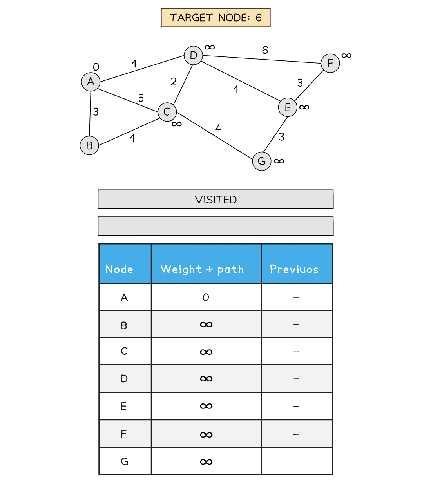
-
Set A path to 0 and all other path weights to infinity
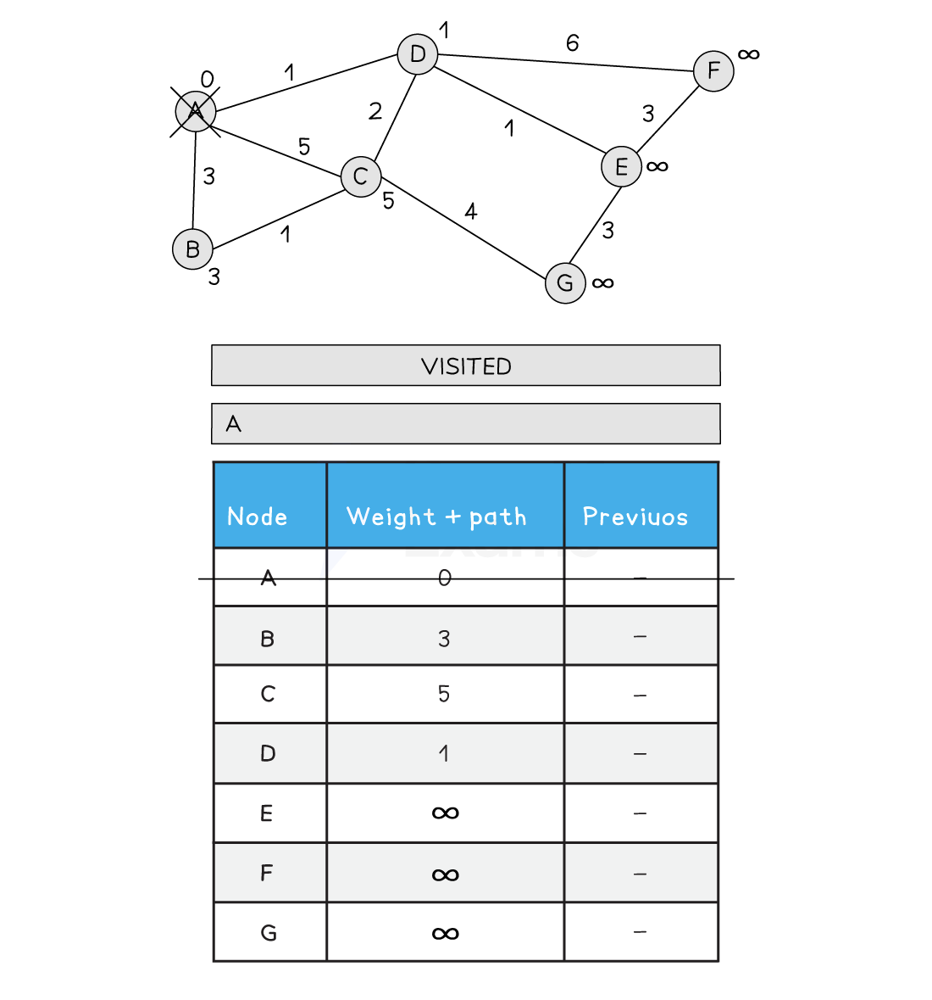
-
Visit A. Update all neighbouring nodes path weights to the distance from A + A’s path weight (0)
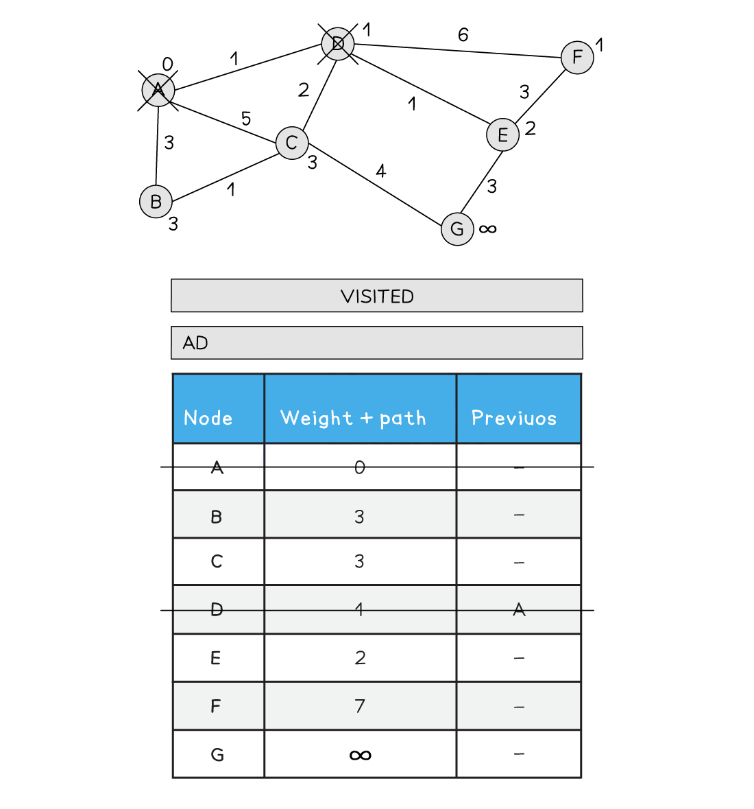
-
Choose the next node to visit that has the lowest path weight (D)
- Visit D
- Update all neighbouring, non-visited nodes with a new path weight if the old path weight is bigger than the new path weight
-
C is updated from 5 to 3 as the new path is shorted (A > D > C)
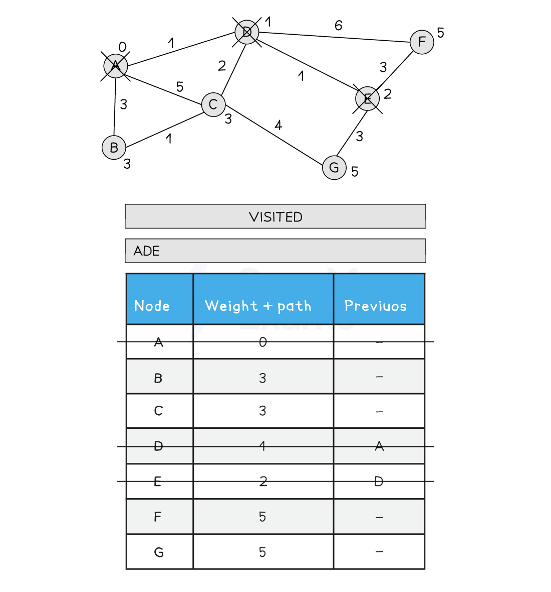
-
Choose the next node to visit that has the lowest path weight (E)
- Visit E
- Update all neighbouring, non-visited nodes from E with a new path weight
-
F is updated from 7 to 5 as the new path is shorter (A > D > E > F)
-
Choose the next node to visit, alphabetically (B)
- Visit B
- Update all neighbouring non-visited nodes from B with a new weight if the path is less than the current path
-
C is not updated as A > B > C is 4
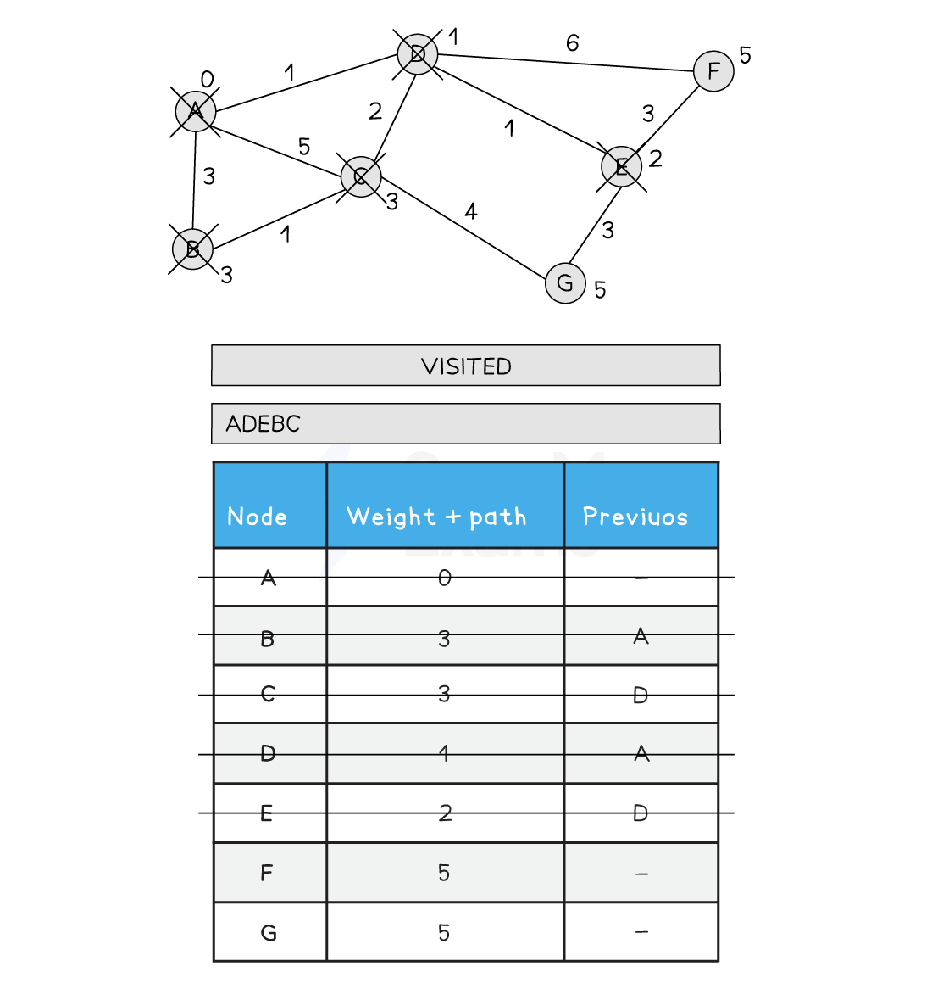
-
Choose the next lowest node and visit (C)
- Update C’s neighbours if the new path is shorter than the old path
-
A > D > C > G is 8, so G is not updated
-
Choose the next lowest node and visit (F)
- Update F’s neighbours if the new path is shorter than the old path
-
F has no non-visited neighbours so no updates are made
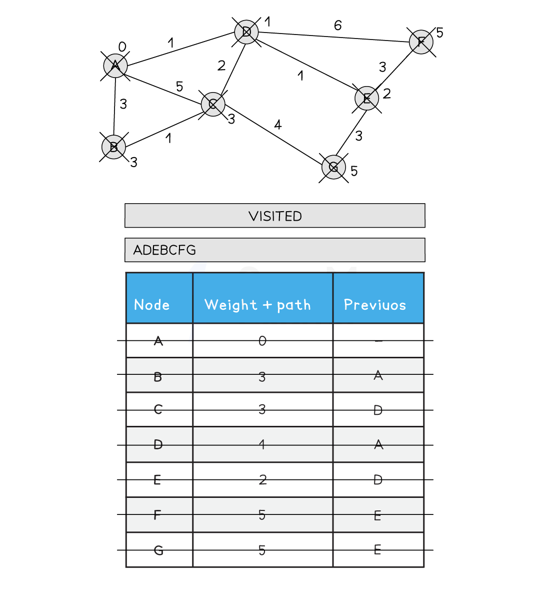
-
Choose the next lowest node and visit (G)
- G has no non-visited neighbours so no updates are made
- All nodes have been visited
- Back tracking from G gives the following order and total distance A-D-E-G (5)
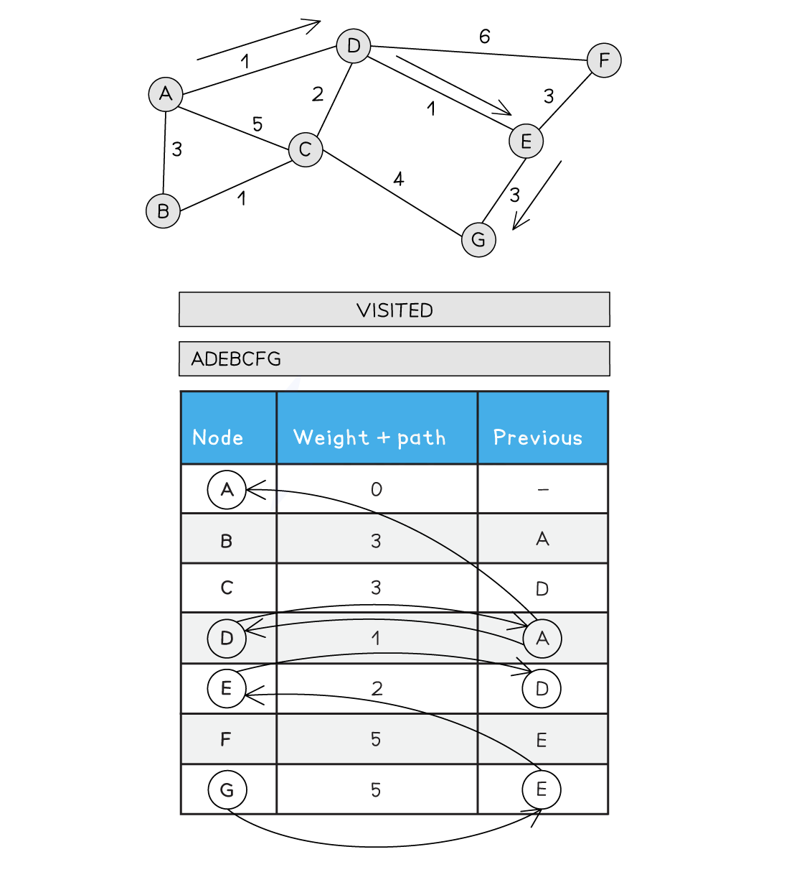
Figure 1: Performing Dijkstra’s Shortest path Algorithm
Programming Dijkstra’s shortest path algorithm
How do you write Dijkstra’s shortest path algorithm?
Pseudocode
FUNCTION Dijkstra(graph, start, goal)
// Initialise distances
FOR EACH node FROM graph
SET distance[node] TO infinity
NEXT node
SET distance[start] TO 0
DECLARE previousNode AS DICTIONARY
DECLARE visited AS LIST
DECLARE unvisited AS LIST
FOR EACH node FROM graph
ADD node TO unvisited
NEXT node
WHILE LENGTH(unvisited) > 0
// Find unvisited node with shortest distance
SET min TO null
FOR EACH node FROM unvisited
IF min = null THEN
SET min TO node
ELSEIF distance[node] < distance[min] THEN
SET min TO node
ENDIF
NEXT node
// Exit if goal reached
IF min = goal THEN
EXIT WHILE
ENDIF
// Update distances to neighbours
FOR EACH neighbour FROM graph[min]
SET cost TO weight(min, neighbour) // assume this function returns the edge weight
SET alt TO distance[min] + cost
IF alt < distance[neighbour] THEN
SET distance[neighbour] TO alt
SET previousNode[neighbour] TO min
ENDIF
NEXT neighbour
REMOVE min FROM unvisited
ADD min TO visited
ENDWHILE
// Build path from goal to start
DECLARE path AS LIST
SET node TO goal
WHILE node != start
ADD node TO path
SET node TO previousNode[node]
ENDWHILE
ADD start TO path
REVERSE path
RETURN path
ENDFUNCTION
Assumptions:
graph[node]returns a list of neighbour nodesweight(x, y)returns the edge weight between nodexandy- Lists like
visited,unvisited, andpathsupportADDandREMOVE
Python
def dijkstra(graph, start, goal):
# Initialise distances and previous node map
distance = {node: float('inf') for node in graph}
distance[start] = 0
previous_node = {}
visited = set()
unvisited = set(graph.keys())
while unvisited:
# Find the unvisited node with the smallest distance
min_node = None
for node in unvisited:
if min_node is None or distance[node] < distance[min_node]:
min_node = node
if min_node == goal:
break
for neighbour, weight in graph[min_node]:
if neighbour in visited:
continue
alt = distance[min_node] + weight
if alt < distance[neighbour]:
distance[neighbour] = alt
previous_node[neighbour] = min_node
visited.add(min_node)
unvisited.remove(min_node)
# Reconstruct path from goal to start
path = []
current = goal
while current != start:
path.append(current)
current = previous_node[current]
path.append(start)
path.reverse()
return path
Example usage:
# Graph format: adjacency list with weighted edges
graph = {
'A': [('B', 2), ('C', 5)],
'B': [('D', 1)],
'C': [('D', 2)],
'D': [('E', 3)],
'E': []
}
print(dijkstra(graph, 'A', 'E'))
Output:
- A list of nodes representing the shortest path from
'A'to'E'
A* Algorithm
A* algorithm
What is the A* algorithm?
- The A* (A-star) algorithm is a pathfinding algorithm that builds upon Dijkstra’s algorithm
- It introduces a heuristic function to improve efficiency
- It is used to find the shortest path from a starting node to a goal node in a graph
- While Dijkstra’s algorithm considers only the actual cost from the start node:
- A* enhances this by estimating the remaining distance to the goal
- This makes it more goal-oriented and often more efficient
How A* improves on Dijkstra’s
- To avoid inefficient detours, A* introduces a heuristic function, called h(x)
- It estimates the straight-line distance (Euclidean distance) from the current node to the goal
- A* combines both cost and estimate using the formula:
- f(x) = g(x) + h(x)
- g(x) = the actual cost from the start node to the current node
- h(x) = the heuristic estimate to the goal node
- f(x) = the total estimated cost of the cheapest solution through node x
- By choosing nodes with the lowest f(x) value, A* aims to explore paths that are both cheap and move closer to the goal
Heuristics in A*
- The heuristic function h(x) should never overestimate the true cost to the goal
- This ensures A* remains optimally efficient
- The closer h(x) is to the true cost, the fewer nodes A* needs to explore
- If h(x) increases, it may indicate the algorithm is moving away from the goal, helping it backtrack or choose a better path
- Below is an illustration of the A* search:
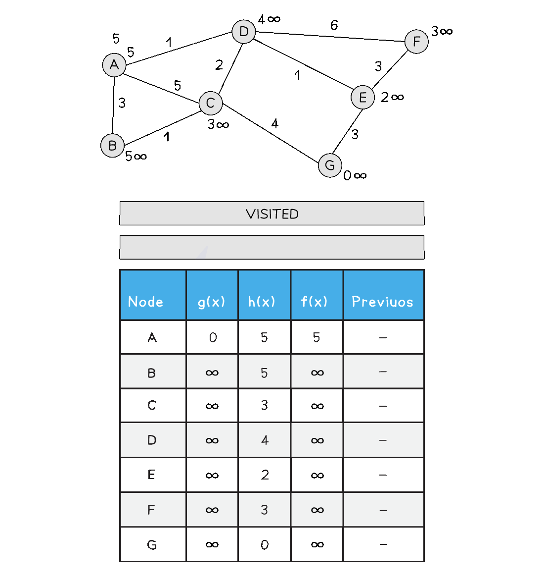
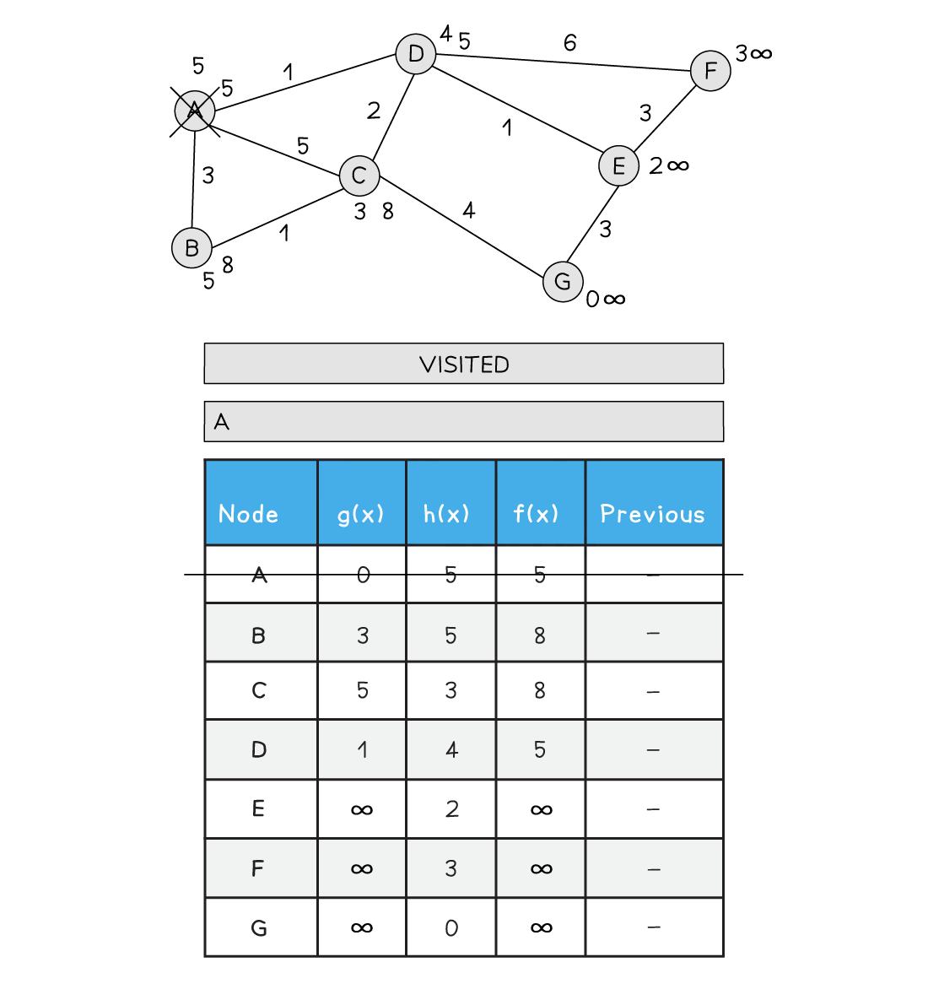
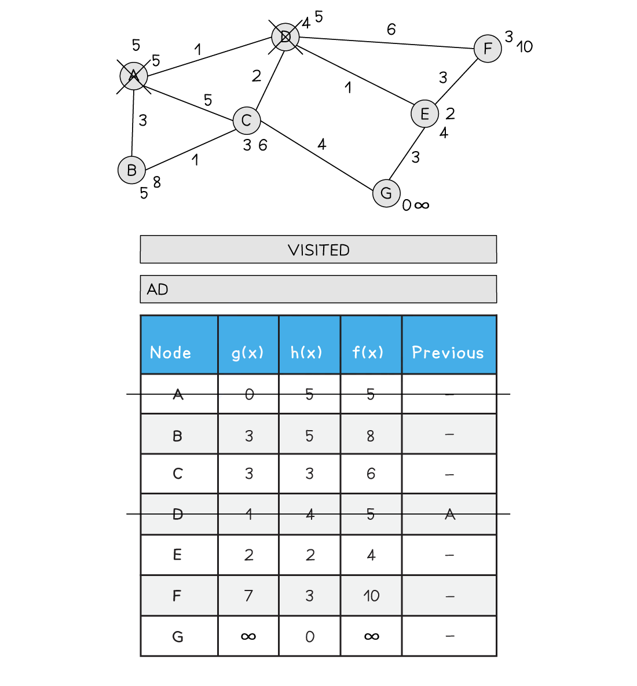
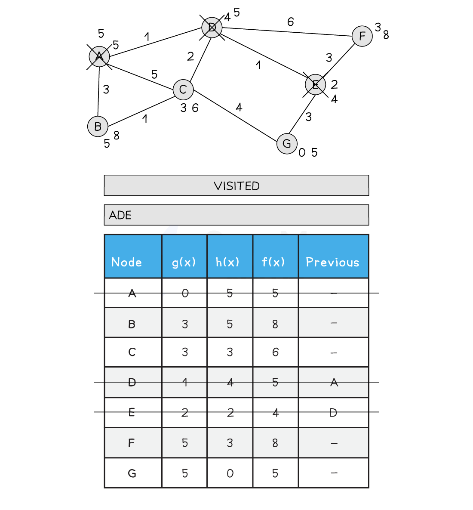
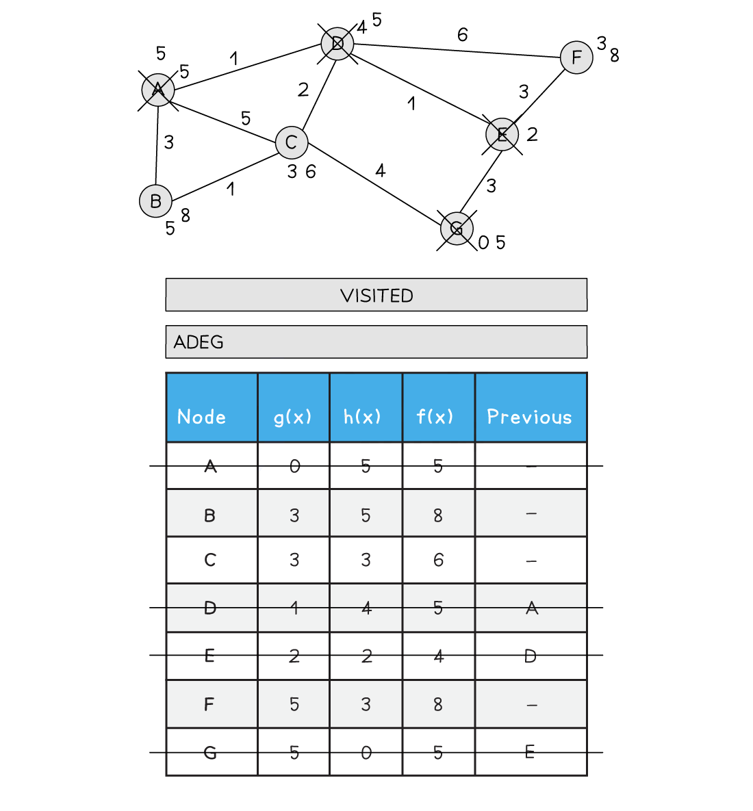
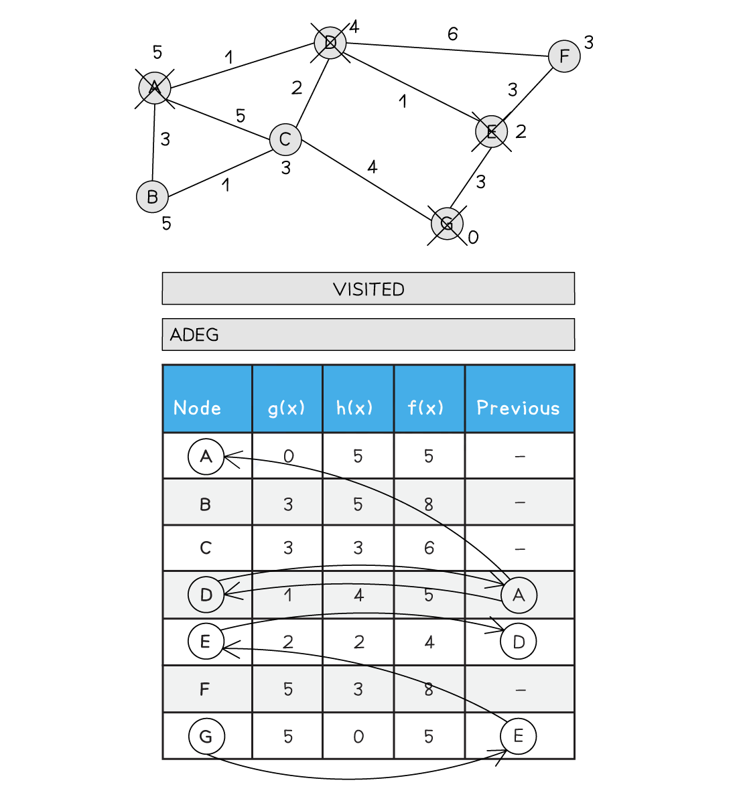
Figure 2: Performing the A* Search
A* vs Dijkstra’s
| Feature | Dijkstra’s | A* Search |
|---|---|---|
| Goal-aware? | No | Yes |
| Cost function | g(x) |
g(x) + h(x) |
| Speed | Slower (explores more) | Faster (more direct toward goal) |
| Use of heuristic | None | Yes, estimates distance to goal |
| Best for… | Full shortest path map | Fastest route to a specific destination |
Programming A* algorithm
How do you write an A* algorithm?
Pseudocode
FUNCTION AStarSearch(graph, start, goal)
// Initialise distances and f-scores
FOR EACH node FROM graph
SET g[node] TO infinity
SET f[node] TO infinity
NEXT node
SET g[start] TO 0
SET f[start] TO h[start]
DECLARE openSet AS LIST
ADD start TO openSet
WHILE openSet IS NOT EMPTY
// Find node in openSet with the lowest f value
SET min TO null
FOR EACH node FROM openSet
IF min = null THEN
SET min TO node
ELSEIF f[node] < f[min] THEN
SET min TO node
ENDIF
NEXT node
IF min = goal THEN
EXIT WHILE
ENDIF
REMOVE min FROM openSet
// Check all neighbours of current node
FOR EACH neighbour FROM graph[min]
SET tentativeG TO g[min] + cost(min, neighbour)
IF tentativeG < g[neighbour] THEN
SET g[neighbour] TO tentativeG
SET f[neighbour] TO g[neighbour] + h[neighbour]
SET previousNode[neighbour] TO min
IF neighbour NOT IN openSet THEN
ADD neighbour TO
graph[min]assumes you’re storing adjacency listsh[node]is your heuristic tableg[]andf[]are maps (dictionaries) for real cost and estimated total costcost(min, neighbour)should be defined or assumed available
Python
def a_star_search(graph, start, goal, h):
open_set = [start]
g = {node: float('inf') for node in graph}
f = {node: float('inf') for node in graph}
came_from = {}
g[start] = 0
f[start] = h[start]
while open_set:
# Get node with lowest f value
current = min(open_set, key=lambda node: f[node])
if current == goal:
break
open_set.remove(current)
for neighbour, cost in graph[current]:
tentative_g = g[current] + cost
if tentative_g < g[neighbour]:
g[neighbour] = tentative_g
f[neighbour] = g[neighbour] + h[neighbour]
came_from[neighbour] = current
if neighbour not in open_set:
open_set.append(neighbour)
# Reconstruct path
path = []
node = goal
while node != start:
path.append(node)
node = came_from[node]
path.append(start)
path.reverse()
return path
Example usage:
graph = {
'A': [('B', 2), ('C', 5)],
'B': [('D', 4)],
'C': [('D', 1)],
'D': [('E', 3)],
'E': []
}
h = {
'A': 7,
'B': 6,
'C': 4,
'D': 2,
'E': 0
}
print(a_star_search(graph, 'A', 'E', h))
Output:
- A possible shortest path from
'A'to'E', guided by the heuristic values
Machine Learning
Neural networks & deep learning
What is machine learning (ML)?
- Machine learning is a type of artificial intelligence (AI) that allows computers to:
- Learn patterns from data
- Improve performance without being explicitly programmed
- Instead of following fixed rules, machine learning systems:
- Analyse large amounts of data
- Identify patterns or trends
- Make predictions or decisions based on that data
- ML is used in: spam filters, voice assistants, recommendation systems, fraud detection
What are artificial neural networks (ANNs)?
- Artificial neural networks (ANNs) are algorithms inspired by the structure of the human brain
- A neural network is made up of layers of nodes (neurons) connected by weighted links
- Each neuron receives input, processes it, and passes the result to the next layer
- The network adjusts the weights based on errors in output (using algorithms like backpropagation)
How ANNs help machine learning
- ANNs are powerful because they:
- Automatically learn from experience, even with complex or unstructured data
- Improve their accuracy with more data and training
- Can solve problems that are too complex for rule-based programming
- Examples: handwriting recognition, speech recognition, image classification, language translation
Deep learning (DL)
- Deep learning is a subfield of machine learning that uses deep (multi-layered) neural networks
- The more layers a network has, the more complex patterns it can learn
- Especially effective at learning abstract features in images, text, audio, and video
- Example: facial recognition apps learn features like eyes, noses, and then full faces through many layers
Reinforcement learning (RL)
- Reinforcement learning is another type of machine learning where an agent learns by interacting with an environment
- It receives rewards for good actions and penalties for poor actions
- Over time, the agent learns an optimal strategy (called a policy) to maximise rewards
- Used in: robotics, self-driving cars, game-playing AI (like AlphaGo), industrial automation
Summary: why use these methods?
| Method | What it does | Why use it |
|---|---|---|
| Machine Learning | Learns from labelled data | Automates decisions with high accuracy |
| Artificial Neural Network | Mimics human brain to recognise complex patterns | Excellent for handling messy, high-dimensional data |
| Deep Learning | Uses many neural layers to extract features | Performs well with images, language, sound |
| Reinforcement Learning | Learns by trial and error with feedback | Useful where there’s no labelled data, only success/failure |
Categories of machine learning
- Machine learning algorithms are categorised based on how they learn from data
- The two main categories are:
Supervised learning
- Supervised learning is when the algorithm is trained on a labelled dataset
- Meaning the input data has known outputs (answers)
- The goal is to learn a function that maps inputs to the correct output
- Once trained, the model can make predictions on unseen data
- Example:
- Input: Email text
- Output: Spam or Not Spam
- The model learns from thousands of pre-labelled emails
Used for:
- Classification (e.g. face recognition, spam detection)
- Regression (e.g. predicting house prices)
Unsupervised learning
- Unsupervised learning is when the algorithm is given unlabelled data, and it must find patterns or groupings on its own
- There are no correct answers, the system explores the data structure
- It identifies clusters, trends, or anomalies without any guidance
- Example:
- Input: Customer purchase data
- Output: Groups of customers with similar buying habits
Used for:
- Clustering (e.g. customer segmentation, social network analysis)
- Dimensionality reduction (e.g. simplifying complex data)
Back propagation & regression
What is back propagation?
- Back propagation is a training method used in artificial neural networks to improve accuracy by adjusting the weights of connections
- It is a key part of the supervised learning process and works as follows:
1. Forward pass:
- Input data passes through the network layer by layer
- The network produces an output (a prediction)
- Error calculation
- The output is compared to the actual target value
- The difference is called the error
- Backward pass
- The error is propagated backwards through the network
- Each layer calculates its contribution to the error
- Weight adjustment
- The weights of the connections are updated using an algorithm (e.g. gradient descent) to reduce future errors
Why use back propagation?
- Helps the neural network learn from mistakes
- Makes the model more accurate over time
- Allows multi-layer networks to fine-tune all layers, not just the output
- Common in: image recognition, speech recognition, language translation
What is regression?
- Regression is a type of supervised learning used to predict continuous values (rather than categories)
- The aim is to find the relationship between input features and a numerical output
Types of regression:
| Type | Description |
|---|---|
| Linear regression | Predicts output using a straight-line relationship (y = mx + c) |
| Multiple linear regression | Uses multiple input features to predict one continuous output |
| Logistic regression | Predicts binary outcomes (e.g. yes/no), despite the name “regression” |
Example: linear regression
- Predicting house prices based on square footage:
- Input: size of house
- Output: estimated price
- The model learns a line that best fits the data points
Why use regression methods?
- Useful for forecasting, trend analysis, and risk prediction
- Interpretable, often used in real-world problems like:
- Business analytics
- Finance
- Healthcare
Quiz
Supervised and unsupervised learning are two categories of machine learning. Describe supervised learning and unsupervised learning.[4] Answer Supervised learning (Max 3 of 4)
- Supervised learning allows data to be collected, or a data output produced, from the previous experience [1 mark]
- In supervised learning, known input and associated outputs are given OR uses sample data with known outputs (in training) OR uses labelled input data [1 mark]
-
Able to predict future outcomes based on past data [1 mark] Unsupervised learning (Max 3 of 4)
-
Unsupervised machine learning helps all kinds of unknown patterns in data to be found [1 mark]
- Unsupervised learning only requires input data to be given [1 mark]
- Uses any data OR not trained on the right output OR uses unlabelled input data [1 mark]